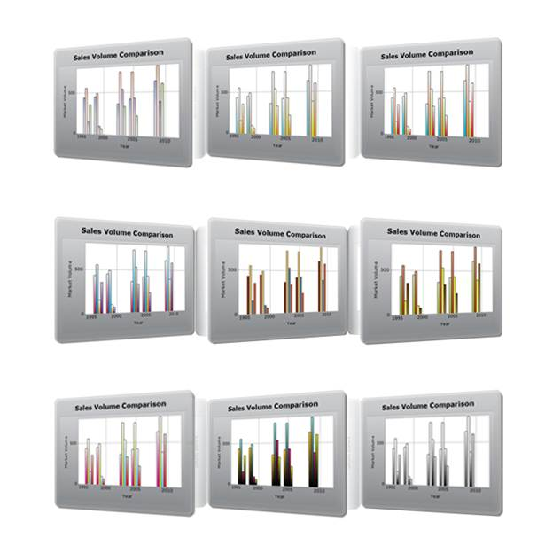

Chart MVC supports nine built-in themes for the Chart series for the professional representation of charts.
The following are the available skins:
· Pastel
· Nature
· GrayScale
· EarthTone
· Triad
· DefaultAlpha
· Colorful
· Analog
· WarmCold

Figure 309: Chart Series Skins
Properties:
|
Property |
Description |
Property Type |
Value it Accepts |
Any Other Dependencies/Sub-properties Associated |
|
ChartSeriesSkins |
Sets the Chartseries' skins. |
enum |
ChartSeriesSkins.Analog
ChartSeriesSkins.Colorful
ChartSeriesSkins.Custom
ChartSeriesSkins.DefaultAlpha
ChartSeriesSkins.EarthTone
ChartSeriesSkins.GrayScale
ChartSeriesSkins.Nature
ChartSeriesSkins.Pastel
ChartSeriesSkins.Triad
ChartSeriesSkins.WarmCold |
NA |
Skins can be applied for the Chart series through two ways:
· Builder
· ChartModel
 Builder
Builder